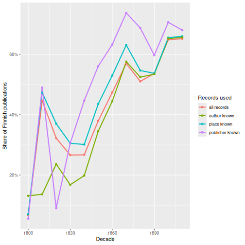

Validation: How Far Can We Trust the Harmonised Data?
Last updated on 2026-11-10 | Edit this page
Overview
Questions
- How do we check that a harmonisation did what we intended?
- How do we compare two harmonisations of the same records?
- When do data problems change the answer to a research question?
Objectives
- Write validation rules as code and collect the results in a report.
- Compare our harmonisation with the Fennica project’s version, field by field.
- Use disagreements to find errors in both versions.
- Show that missing values in bibliographic data are not random.
- Test how sensitive a result is to cleaning and selection decisions.
Why validate?
In the previous episode we built our own harmonised variables: language, place, publisher and author. Every step was a decision, and some decisions will be wrong for some records. Validation means checking, systematically and with code, how good the result is. We use three kinds of checks:
- Rules: conditions that every value should meet (“a place name has no punctuation left”).
- Comparison: an independent harmonisation of the same records, here the one made by the Fennica project.
- Consequences: do the remaining problems change the answer to our question, how did the shift from Swedish to Finnish happen?
We start where the previous episode ended. If you don’t have
records and fennica_ours in your session any
more, download harmonise_fennica.R
into your project folder and run it:
R
source("harmonise_fennica.R")
We also load the Fennica project’s harmonised data:
R
fennica <- read_ipc_file("data/harmonized_fennica19.feather")
1. Validation rules
A validation rule is a logical test that should be TRUE
for every record. It’s useful to write them so that they return the
records that fail, and then count them. A small helper
function makes a one-row report for each rule:
R
check <- function(rule, failing) {
tibble(rule = rule, n_failing = sum(failing, na.rm = TRUE))
}
check("author has no digits", grepl("[0-9]", fennica_ours$author))
OUTPUT
# A tibble: 1 × 2
rule n_failing
<chr> <int>
1 author has no digits 16We collect many rules into one report with
bind_rows():
R
validation_report <- bind_rows(
check("id is unique",
duplicated(fennica_ours$id)),
check("language is a known language name",
!is.na(fennica_ours$language) &
!fennica_ours$language %in% language_table$name),
check("author has no digits",
grepl("[0-9]", fennica_ours$author)),
check("author has no brackets",
grepl("[][()]", fennica_ours$author)),
check("author has no final punctuation",
grepl("[,.;:]$", fennica_ours$author)),
check("publisher is longer than three characters",
nchar(fennica_ours$publisher) <= 3)
)
validation_report
OUTPUT
# A tibble: 6 × 2
rule n_failing
<chr> <int>
1 id is unique 0
2 language is a known language name 0
3 author has no digits 16
4 author has no brackets 8
5 author has no final punctuation 0
6 publisher is longer than three characters 1057Some rules pass, others don’t. Let’s look at the failures:
R
fennica_ours |>
filter(grepl("[0-9]|[][()]", author)) |>
count(author, sort = TRUE) |>
head(8)
OUTPUT
# A tibble: 8 × 2
author n
<chr> <int>
1 Daniel Henkikäsi, numero 3 5
2 Lindroth, Hjalmar,|1878-1947 2
3 1. 2. 3 1
4 10. 11. 12 1
5 13. 14. 15 1
6 16. 17. 18 1
7 4. 5. 6 1
8 7. 8. 9 1Each failure is a different kind of problem.
Daniel Henkikäsi, numero 3 is a pseudonym, and the number
really is part of it. In Lindroth, Hjalmar,|1878-1947 the
years of life ended up in the name field: our
clean_author() should keep only the part before
|. And 1. 2. 3 is not a name at all. When a
validation rule fails, we go back to the raw
record:
R
raw |>
filter(grepl("^[0-9]+\\. [0-9]+\\. [0-9]+", author_name)) |>
select(id, author_name, title)
OUTPUT
# A tibble: 6 × 3
id author_name title
<chr> <chr> <chr>
1 3796398 1. 2. 3. Ett rim efter omständigheterna /
2 3796409 4. 5. 6. Ett rim efter omständigheterna /
3 3796415 7. 8. 9. Ett rim efter omständigheterna /
4 3796416 10. 11. 12. Ett rim efter omständigheterna /
5 3796419 13. 14. 15. Ett rim efter omständigheterna /
6 3796421 16. 17. 18. Ett rim efter omständigheterna /Six records of the same title, Ett rim efter
omständigheterna, have numbers in the author field: probably parts
or verses that were catalogued separately. This cannot be fixed with a
rule; it is a case for a correction list (a table of
ids and corrected values), which the pipeline applies after
the automatic steps.
The short publishers are even more interesting:
R
fennica_ours |>
filter(nchar(publisher) <= 3) |>
count(publisher, sort = TRUE)
OUTPUT
# A tibble: 27 × 2
publisher n
<chr> <int>
1 SKS 800
2 Ks 100
3 Utg 36
4 Owb 32
5 Gej 30
6 S.l 10
7 Op 8
8 Naz 7
9 S.a 6
10 Sok 6
# ℹ 17 more rowsSKS is our own abbreviation, so that rule was too
strict. But S.l and S.a (sine loco,
“without place”, and sine anno, “without year”) are not
publishers: the cataloguer put them in the wrong subfield.
Utg (utgivare, “publisher”) is just the word
“publisher”. Validation finds problems that were invisible in the
frequency tables, and improves the rules themselves.
Hard and soft rules
Some rules must never fail, for example that every
id is unique. For them, make the script stop with an error,
so that a broken export can never silently reach the analysis.
stopifnot() does exactly that:
R
stopifnot("ids must be unique" = !anyDuplicated(fennica_ours$id),
"one row per raw record" = nrow(fennica_ours) == nrow(records))
Other rules are soft: a few failures are expected, and we report them instead. Keep both kinds in the pipeline script, and run them every time the data is rebuilt.
Challenge 1: How much did the synonym table miss?
Write a rule that counts the records where a place
was recorded in the raw data, but our harmonised
place is NA. (Hint: use
clean_place_text(coalesce(records$place_260, records$place_264)),
and remember that we deliberately removed the digitised copies from
Mikkeli.) What are the most common unmatched values? Which of them
should be added to the synonym table, and which should stay
NA?
R
digitised_copy <- is_blank(records$place_260) &
grepl("Mikkeli", records$place_264) &
grepl("verkkoaineisto", records$extent)
place_text <- clean_place_text(coalesce(records$place_260,
ifelse(digitised_copy, NA, records$place_264)))
unmatched <- !is.na(place_text) & is.na(fennica_ours$place)
check("recorded place was not matched", unmatched)
OUTPUT
# A tibble: 1 × 2
rule n_failing
<chr> <int>
1 recorded place was not matched 4892R
head(sort(table(place_text[unmatched]), decreasing = TRUE), 12)
OUTPUT
kustannuspaikka tuntematon s.l.
1966 692
s.-peterburg hancock (mich.)
219 188
gel'singfors fitchburg (mass.)
117 112
kjøbenhavn s.-peterburgʺ
75 62
aboæ brooklyn (n.y.)
59 53
st. petersburg duluth (minn.)
52 51 “Place unknown” (kustannuspaikka tuntematon, s.l.)
should stay NA. Russian forms of St Petersburg and Helsinki
(s.-peterburg, gel'singfors), Danish
Copenhagen (kjøbenhavn, københavn), the Latin
aboæ (Turku), and the Finnish emigrant presses in the
United States should be added to the synonym table.
2. Comparing two harmonisations
The Fennica project harmonised the same records with its own code.
The two versions were made independently, so where they
agree we can be more confident, and where they
disagree at least one of them is wrong. We join the two
by id:
R
comparison <- fennica_ours |>
left_join(
fennica |>
select(id,
their_language = language_original_primary,
their_place = publication_place,
their_publisher = publisher,
their_author = author_name_100,
year = publication_year,
decade = publication_decade),
by = "id")
A function for the share of records where both versions have a value and the values are the same (ignoring upper and lower case):
R
agreement <- function(ours, theirs) {
mean(tolower(ours) == tolower(theirs), na.rm = TRUE)
}
Language
R
agreement(comparison$language, comparison$their_language)
OUTPUT
[1] 1R
comparison |>
count(ours_missing = is.na(language), theirs_missing = is.na(their_language))
OUTPUT
# A tibble: 4 × 3
ours_missing theirs_missing n
<lgl> <lgl> <int>
1 FALSE FALSE 71281
2 FALSE TRUE 728
3 TRUE FALSE 15
4 TRUE TRUE 602Where both have a value they agree completely. But we have a language for 728 records where the project version has none: those are the records without field 041, which we filled from field 008.
Place and publisher
R
agreement(comparison$place, comparison$their_place)
OUTPUT
[1] 0.01724056R
agreement(comparison$publisher, comparison$their_publisher)
OUTPUT
[1] 9.325531e-05Almost no agreement at all! Something must be very different. Let’s look at a few records side by side:
R
comparison |>
select(place, their_place, publisher, their_publisher) |>
filter(!is.na(place), !is.na(publisher)) |>
head(5)
OUTPUT
# A tibble: 5 × 4
place their_place publisher their_publisher
<chr> <chr> <chr> <chr>
1 Vyborg F cederwaller A. F. Cederwaller wiipurissa
2 Helsinki Jim östling G. Jim Östling helsingfors
3 Helsinki Sällskapet finlands geografi Sällskapet För Finlands… helsingfors
4 Turku <NA> Frenckell turku
5 Turku W lillja J. W. Lillja åbo The project’s publication_place column contains
publishers, and its publisher column contains places: the
two columns were swapped during harmonisation. In the
raw data (fields 260a and 260b) they are correct. Comparing the other
way round:
R
agreement(comparison$place, comparison$their_publisher)
OUTPUT
[1] 0.6256056R
agreement(comparison$publisher, comparison$their_place)
OUTPUT
[1] 0.5564043Better, but still far from complete. What are the most common disagreements in place?
R
comparison |>
filter(tolower(place) != tolower(their_publisher)) |>
count(place, their_place = their_publisher, sort = TRUE) |>
head(8)
OUTPUT
# A tibble: 8 × 3
place their_place n
<chr> <chr> <int>
1 Helsinki helsingfors 11549
2 Turku åbo 943
3 Vyborg viipuri 692
4 Turku aboae 623
5 Helsinki helsingissä 516
6 Porvoo borgå 470
7 Vaasa vasa 241
8 Vyborg wiipuri 189The project’s version keeps the language of the name: Helsingfors and Helsinki, Åbo and Turku are separate values. That is not wrong, but it is a different decision, and it matters a lot, as we will see below.
Challenge 2: A publisher called Turku
The project’s publisher column (remember: their_place
after the swap) contains the value Turku for 579 records.
Turku is a town, not a publisher. Find out which publishers in
our version these records have. Is it our error or
theirs?
R
comparison |>
filter(their_place == "Turku") |>
count(publisher, sort = TRUE) |>
head(8)
OUTPUT
# A tibble: 8 × 2
publisher n
<chr> <int>
1 Svenska Litteratursällskapet I Finland 92
2 Turistföreningen I Finland 18
3 Föreningen För Arbetareskydd Och Socialförsäkring I Finland 17
4 Lutherska Evangeliföreningen I Finland 17
5 Åbo Stad 15
6 Åbo Tidning 11
7 Fiskeriföreningen I Finland 10
8 Svenska Litteratursälskapet I Finland 10The raw publishers are societies with names like Svenska Litteratursällskapet i Finland, and a few with Åbo in their name. A rule in the project’s harmonisation turned them into the town name Turku. It is an error in the project version, which we found only because we had an independent version to compare with.
Author
R
agreement(comparison$author, comparison$their_author)
OUTPUT
[1] 0.8401764R
comparison |>
filter(tolower(author) != tolower(their_author)) |>
count(author, their_author, sort = TRUE) |>
head(6)
OUTPUT
# A tibble: 6 × 3
author their_author n
<chr> <chr> <int>
1 Setälä, E. N Setälä, E N 100
2 Reuter, O. M Reuter, O M 91
3 Leinberg, K. G Leinberg, K G 81
4 Thomas Ragvaldinpoika Ragvaldinpoika, Thomas 78
5 Tavaststjerna, K. A Tavaststjerna, K A 74
6 Tigerstedt, K. K Tigerstedt, K K 74Most differences are a matter of style: the project’s polish_author()
removes all full stops from initials (E N instead of
E. N). But look at Thomas Ragvaldinpoika: a
patronymic (-poika = “son of”), correctly catalogued with the
given name first, which the project version reverses into
Ragvaldinpoika, Thomas, as if it were a surname. Rules
written for modern names do not fit every name.
3. Missing values are not random
So far we have asked whether the values are right. Just as important is which values are missing. Compare Finnish and Swedish publications:
R
comparison |>
filter(language %in% c("Finnish", "Swedish")) |>
group_by(language) |>
summarise(records = n(),
no_place = mean(is.na(place)),
no_publisher = mean(is.na(publisher)),
no_author = mean(is_blank(author)))
OUTPUT
# A tibble: 2 × 5
language records no_place no_publisher no_author
<chr> <int> <dbl> <dbl> <dbl>
1 Finnish 40581 0.157 0.302 0.385
2 Swedish 23352 0.211 0.520 0.422A Swedish publication is much more likely than a Finnish one to have no publisher and no place. The missing values are not random: whether a value is missing depends on the very thing we want to study. Any analysis that silently drops the incomplete records will be biased.
4. Does it change the answer?
The final and most important validation question is: do these problems change our conclusions? We calculate the share of Finnish publications per decade on four different subsets of the data, the kind of subsets that appear automatically when an analysis uses one more variable:
R
finnish_share <- comparison |>
filter(!is.na(decade), !is.na(language)) |>
group_by(decade) |>
summarise(
`all records` = mean(language == "Finnish"),
`place known` = mean(language[!is.na(place)] == "Finnish"),
`publisher known` = mean(language[!is.na(publisher)] == "Finnish"),
`author known` = mean(language[!is_blank(author)] == "Finnish")
)
finnish_share
OUTPUT
# A tibble: 12 × 5
decade `all records` `place known` `publisher known` `author known`
<dbl> <dbl> <dbl> <dbl> <dbl>
1 1800 0.0671 0.0701 0.0556 0.131
2 1810 0.446 0.473 0.490 0.136
3 1820 0.322 0.370 0.0901 0.236
4 1830 0.266 0.305 0.306 0.168
5 1840 0.267 0.301 0.447 0.198
6 1850 0.380 0.436 0.561 0.345
7 1860 0.474 0.530 0.632 0.444
8 1870 0.570 0.631 0.737 0.576
9 1880 0.510 0.547 0.688 0.524
10 1890 0.537 0.537 0.597 0.534
11 1900 0.649 0.655 0.706 0.652
12 1910 0.652 0.660 0.680 0.656language[!is.na(place)] takes the languages only of the
records where the place is known. A plot makes the differences easier to
see:
R
finnish_share |>
pivot_longer(-decade, names_to = "subset", values_to = "share") |>
ggplot(aes(x = decade, y = share, colour = subset)) +
geom_line(linewidth = 1) +
geom_point() +
scale_y_continuous(labels = scales::percent) +
labs(x = "Decade", y = "Share of Finnish publications", colour = "Records used")

The overall story is the same in every version: Finnish rises from almost nothing to about two thirds of all publications. But the size and the timing of the shift depend on the subset. Among records with a known publisher, Finnish already passes 50% in the 1850s; among all records, only in the 1870s. In the early decades, where there are few records, the lines jump around wildly. That uncertainty is what the next parts of this course are about.
(The high value for the 1810s is a puzzle of its own. It comes from the publication dates, which we examine in a later episode.)
Challenge 3: The language of a place name
Use records and fennica_ours to calculate
the share of Finnish publications among the records whose raw field 260
says exactly Helsinki : and among those that say
Helsingfors :. What does this tell you about using the
raw place name in an analysis of language? And what
does it tell you about the project version, which keeps Helsinki and
Helsingfors apart?
R
tibble(place_260 = records$place_260, language = fennica_ours$language) |>
filter(place_260 %in% c("Helsinki :", "Helsingfors :")) |>
group_by(place_260) |>
summarise(records = n(), finnish = mean(language == "Finnish", na.rm = TRUE))
OUTPUT
# A tibble: 2 × 3
place_260 records finnish
<chr> <int> <dbl>
1 Helsingfors : 11025 0.0387
2 Helsinki : 13566 0.952 Almost all books with Helsinki are in Finnish, and almost all books with Helsingfors in Swedish: the place name is copied from the title page, so it is written in the language of the book. In the project version, “Helsinki” and “Helsingfors” therefore look like two different towns with opposite languages. A model that tried to “explain” the language with this place variable would find a perfect but meaningless relationship, because the variable is partly the outcome itself. Harmonising the place names is necessary before place can be used to study language.
Validation as part of the pipeline
Validation is not a one-off check but part of the workflow:
- Profile the raw data.
- Harmonise with functions and lookup tables.
- Validate with rules, comparisons and sensitivity checks.
- Fix the rules or the tables, and rerun everything from the raw data.
Save the validation report together with the data, so that anyone using the data can see what was checked:
R
write.csv(validation_report, "data/validation_report.csv", row.names = FALSE)
- Validation rules are logical tests written as code; count the records that fail and inspect them in the raw data.
- Use
stopifnot()for rules that must never fail, and a report for rules that may. - Two independent harmonisations of the same records are a powerful check: disagreements reveal errors in both.
- The Fennica project’s harmonised data has swapped place and publisher columns and keeps language-specific place names.
- Missing values in bibliographic data are not random: Swedish publications lack a publisher or place more often than Finnish ones.
- Always test whether cleaning and selection decisions change the answer to your research question.